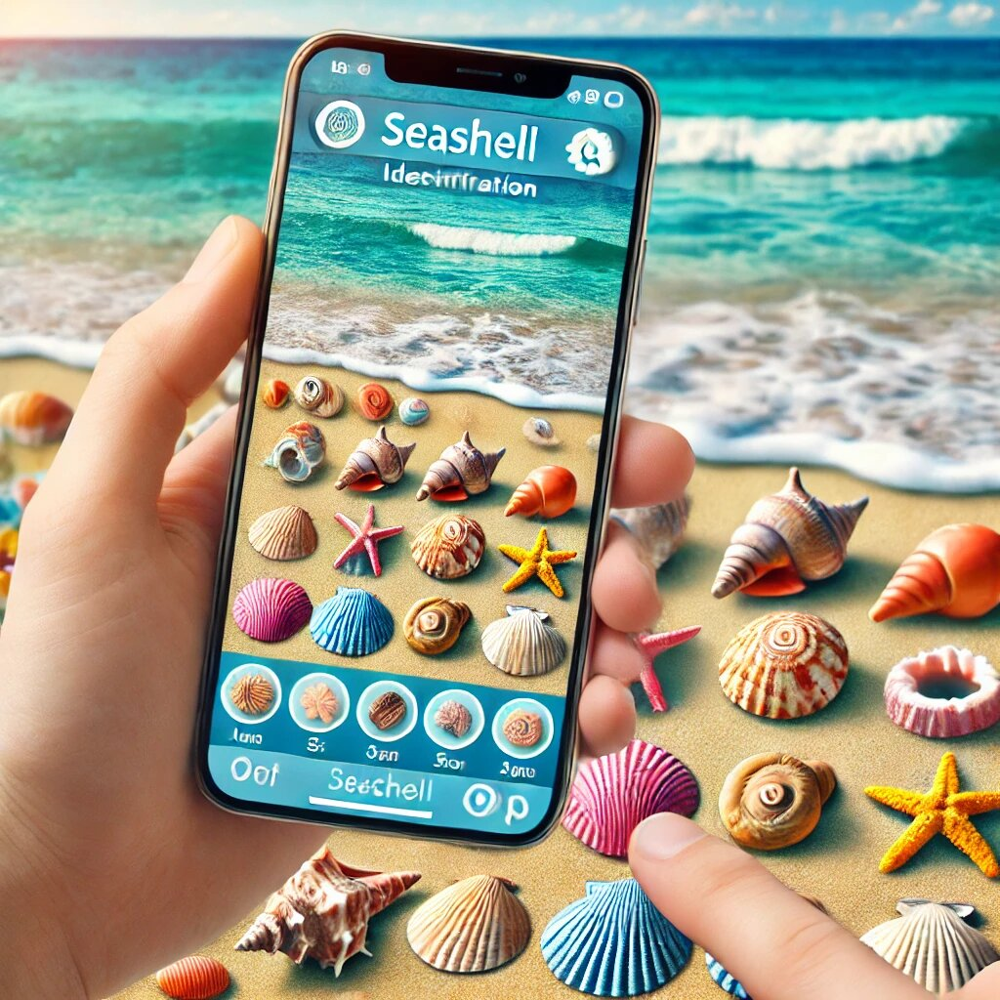

Have you ever walked along a beach, picked up a beautiful shell, and wondered, “What on earth is this?” If you’re a shell enthusiast, a beachcomber, or just someone who loves the ocean, identifying shells can be both exciting and frustrating. Thankfully, technology has come to the rescue with two incredible apps: the National Shell Museum App and Beachcomber for Australia. These apps are like having a marine biologist in your pocket, ready to help you identify and learn about shells with just a few taps. Let’s dive into the wonderful world of these apps and explore why they’re a must-have for anyone who loves the beach.
Both the National Shell Museum App and Beachcomber for Australia are designed to make shell identification app experiences easy, fun, and educational. Whether you’re a beginner or a seasoned shell collector, these apps cater to all levels of expertise. Here’s why they stand out:
Let’s face it—no one wants to spend hours figuring out how to use an app. The good news is that both apps are incredibly intuitive. With clean layouts, simple navigation, and clear instructions, you’ll be identifying shells in no time. Even if you’re not tech-savvy, you’ll find these apps a breeze to use.
The National Shell Museum App boasts a comprehensive database of shells from around the world. Whether you’re in Florida, the Caribbean, or anywhere else, this app has you covered. On the other hand, Beachcomber for Australia focuses on the unique and diverse shells found along Australia’s stunning coastlines. Together, these apps offer a global perspective on shell identification.
One of the best features of these apps is their use of high-resolution images. Each shell is displayed in vivid detail, making it easy to compare your find with the app’s database. It’s like having a mini shell museum right on your phone!
These apps aren’t just about identifying shells—they’re also about learning. Each shell entry comes with fascinating facts, including its scientific name, habitat, and even its role in the ecosystem. Who knew shells could be so interesting?
Whether you’re a curious kid or a lifelong learner, these apps are designed for everyone. They’re a fantastic way to spark an interest in marine biology or simply enjoy a day at the beach with a new hobby.
The National Shell Museum App is a treasure trove for shell lovers. Here’s why it’s worth downloading:
No matter where you are in the world, this app can help you identify shells. From the tiniest cowrie to the most elaborate conch, the app’s database is vast and varied.
The app includes interactive tools like zoomable images and side-by-side comparisons. This makes it easier to spot the subtle differences between similar-looking shells.
Planning a beach trip with spotty internet? No problem! The app allows you to download data for offline use, so you can identify shells even in the most remote locations.
The app is constantly updated with new shells and features, ensuring you always have access to the latest information.
The app connects you with a community of shell enthusiasts. Share your finds, ask questions, and learn from others who share your passion.
If you’re in Australia or planning a visit, Beachcomber for Australia is the ultimate companion for your beach adventures. Here’s why:
Australia is home to some of the most unique and diverse marine life in the world, and its shells are no exception. This app focuses specifically on Australian species, making it the go-to resource for local shell identification.
The app’s search function is incredibly user-friendly. You can search by shell shape, color, size, or even the beach where you found it. It’s like having a personal shell detective!
The app’s design is as stunning as the shells it features. With a clean, modern interface and gorgeous visuals, it’s a joy to use.
The app doesn’t just help you identify shells—it also educates you about conservation. Learn how to beachcomb responsibly and protect Australia’s precious marine ecosystems.
If you’re exploring Australia’s coastline, this app is a must-have. It’s like having a local guide who knows everything about the shells you’ll find along the way.
Beachcombing is more than just a hobby—it’s a way to connect with nature and discover the beauty of the ocean. Here’s how these apps enhance the experience:
With these apps, every beach walk becomes a treasure hunt. You’ll start noticing shells you never knew existed and learn to appreciate the incredible diversity of marine life.
Instead of just collecting shells, you’ll be learning about them. It’s a fun and educational way to spend time at the beach.
Both apps allow you to save and share your discoveries. Whether you’re posting on social media or showing off to friends, you’ll have a record of your shell-collecting adventures.
Looking for a fun activity to do with your kids? These apps are perfect for family outings. They’re educational, engaging, and a great way to get everyone excited about nature.
To get the most out of the National Shell Museum App and Beachcomber for Australia, here are a few tips:
The National Shell Museum App and Beachcomber for Australia are more than just apps—they’re gateways to a fascinating world of shells and marine life. Whether you’re a casual beachgoer or a dedicated shell collector, these apps will enhance your experience and deepen your appreciation for the ocean.
So, the next time you’re at the beach, don’t just pick up a shell—identify it, learn about it, and share your discovery with the world. With these apps in your pocket, every shell has a story waiting to be told.
Happy beachcombing!